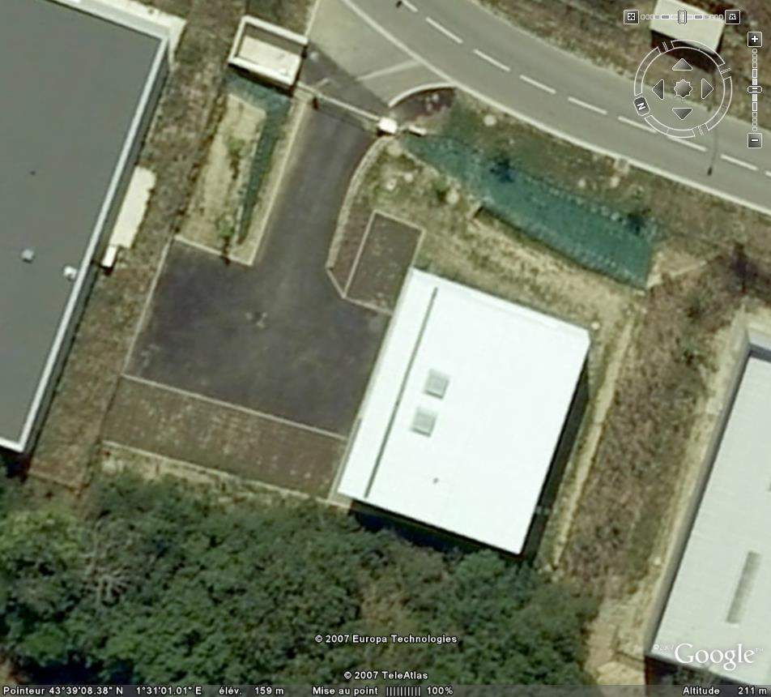

Internet & tech
Google Earth passe au-dessus de chez moi
This post was originally written in French.
Et voilà, Google est passé au-dessus de chez moi. Enfin, disons plutôt que Google Earth a mis à jour la précision des vues de la banlieu toulousaine. Le plus étonnant c'est qu'elles ont été mises à jour cette semaine (juin 2007), mais étant donné la vue sur le jardin, je sais que la prise de vue date d'une journée entre mai 2006 et juillet 2006. Plus d'un an entre la prise de vue et la mise en ligne donc. On est loin de pouvoir tracker des personnes en temps réel sur le net. (oui ca m'amuserait ;-))
This is where we live

And this is where I work (10 minutes from home, nice ...)
